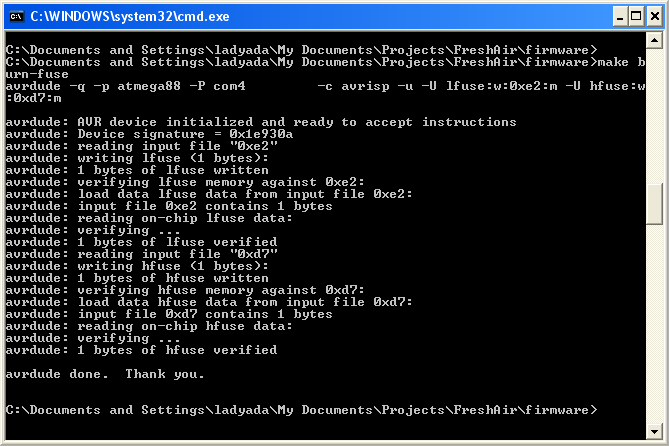

This subcircuit does the work of tuning and generating the waveform for the VCOs. The main control is an atmega88. The micro has a bunch of tasks:
- Generate the DC offset for the jammers with the PWM subsystem on chip
- Tune the bandwidth to be jammed by configuring the digital potentiometers
- Switching between high/low frequency generation
- Talking to the PLL and verifying the frequencies being jammed
The 555 and related subcircuit is used to generate the sawtooth wave that sweeps between the desired bandwidth. The frequency-setting resistor is tied to a microcontroller pin; when the pin is pulled high, a 20Khz wave is generated. When the pin is set as a pull-up input, a 100Hz wave is generated so that the micro's A/D has enough time to read the PLL output.
- LM358's are essential as they are near rail-to-rail op amps that can go up to 30V.
- You can use 10K or 1K digital pots, the 1K will just use more power.
- The Atmega88 can be replace by a '168: they are pin compatible. Atmega8Ls are also OK but might require some code tweaking YMMV.
- To set the final gain stage. First decide how much voltage you'll need to sweep the desired bandwidth. Say 5Vpp. The output from the 555 is 1Vpp therefore the gain should be at least 5x. However, also make sure that you can't go over Vtune. Since the PWM output is 0-3.3V, take the max Vtune and divide by 3.3. Say it's 20V, then the gain should be 6x. If the ac gain desired is larger than the max dc gain, use R11/R13 to reduce the dc max output.
| Part # & Datasheets | Name |
Description | Distributor |
Qty |
Cost |
Total |
|---|---|---|---|---|---|---|
IC5 |
8-bit microcontroller, an atmega48 is fine if take out the self-tuning stuff or dont want a bootloader. Atmega8 is probably OK too. | 1 |
$3.76 |
$3.76 |
||
| *AD8402ARZ10 | IC6 |
Dual digital 10K potentiomenter | 1 |
$3.78 |
$3.78 |
|
| *LMC555 (or any CMOS 555 equiv) | IC7 |
CMOS 555 | 1 |
$0.65 |
$0.65 |
|
| *LM358D | IC8, IC9 |
Dual rail/rail high voltage op-amp | 1 |
$0.22 |
$0.22 |
|
| MMBT3906 | Q1 |
PNP SOT-23 transistor | 1 |
$0.05 |
$0.05 |
|
JP2 |
2x3 male reprogramming header | Digikey Mouser |
1 |
|||
JP1 |
F/M matching header for serial comm |
Digikey Mouser |
1 |
|||
LED2 |
LED (1206) any really, but the recommended one is right-angle mount | 1 |
$0.16 |
$0.16 |
||
| 0.1uF ceramic 1206 capacitor | C21, C24, C25, C31, C32, C35 |
0.1uF Bypass cap | 4 |
$0.08 |
$0.32 |
|
| C1206C475Z4VAC7800 | C22, C23, C33, C34 |
4.7uF 1206 ceramic capacitor | 4 |
$0.30 |
$1.20 |
|
| 68ohm 5% 1206 resistor | R12 |
Current source set resistor, reduce for higher freq. | 1 |
$0.08 |
$0.08 |
|
| 1K 5% 1206 resistor | L5, L6 |
Use inductors to reduce PWM noise | 2 |
$0.08 |
$0.16 |
|
| 10K 5% 1206 resistor | R10, R14, R16, R17, R18 |
various 10K's | 5 |
$0.08 |
$0.40 |
|
| 20K 5% 1206 resistor | R11 |
Sets bias for current source | 1 |
$0.08 |
$0.08 |
|
| 39K 5% 1206 resistor | R13 |
Sets gain for VCO1 adjust as necessary | Digikey |
1 |
$0.08 |
$0.08 |
| 47K 5% 1206 resistor | R15 |
Sets gain for VCO2 adjust as necessary | Digikey |
1 |
$0.08 |
$0.08 |
1206 resistor |
R8 |
placement optional: to set max gain for VCO1 | Digikey |
1 |
$0.08 |
$0.08 |
| 1206 resistor | R9 |
placement optional: to set max gain for VCO2 | Digikey |
1 |
$0.08 |
$0.08 |
| Total | $3-$10 |
 |
Get parts for soldering in the microcontroller, led, and programming header |
 |
Solder in the header and led/resistor on one side. |
 |
Solder in the microcontroller on the opposite side |
 |
Attach your favorite AVR programmer to the 6 pin header |
|  | Burn the fuses, then compile the code with the LED test uncommented. |
|
The green led should blink once per second to indicate the fuses are correct and programming was successful. |
|
Next, test the PWM output. Comment out the LED test and uncomment the PWM test. Probe the PWM outputs (L5 and L6 input). You should get a sweeping 16KHz squarewave. |
|
|
Solder in the RC filter (L5/L6 & C22/C23) Then probe at their junction to see a slowly increasing/decreasing DC offset |
 |
Solder in the 555 sawtooth generator and buffer opamp. |
|
|
Reprogram the chip with the sawtooth frequency test. Probe the output of the buffer and notice it switching between 100Hz and 20KHz. A good multimeter with frequency counting can also do this. |
 |
Solder in the remainder of the wave generator. |
|
Test the adjustable resistors (digital pots) by programming in the potentiometer test and then probing the wipers of the digipots. You should see a varying amplitude sawtooth. |